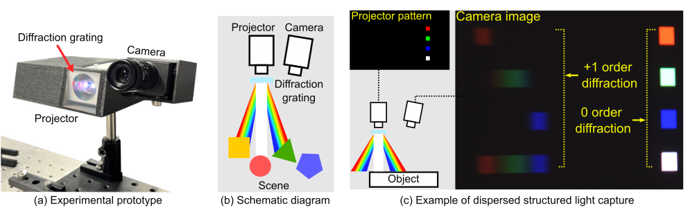

White Scanline Pattern
We illuminate white scan line pattern for hyperspectral imaging.
We devise the proposed imaging system with the goals of compactness and affordability. We combine a conventional trichromatic camera with a trichromatic projector and a diffraction-grating film mounted in front. This configuration makes light from the projector undergo dispersion, and, as such, patterns emitted from the projector are spatially dispersed depending on wavelength.
 />Our prototype consists of an RGB projector equipped with a diffraction grating film, and an RGB camera, as shown in the left and middle images. The right image shows an example projector pattern and its corresponding captured image, exhibiting clear first-order diffraction.
We illuminate white scan line pattern for hyperspectral imaging.
We illuminate dispersed binary-code structured light for depth imaging.
@inproceedings{shin2024dispersed,
title={Dispersed Structured Light for Hyperspectral 3D Imaging},
author={Shin, Suhyun and Choi, Seokjun and Heide, Felix and Baek, Seung-Hwan},
booktitle = {Proceedings of the IEEE/CVF Conference on Computer Vision and Pattern Recognition (CVPR)},
year={2024}
}